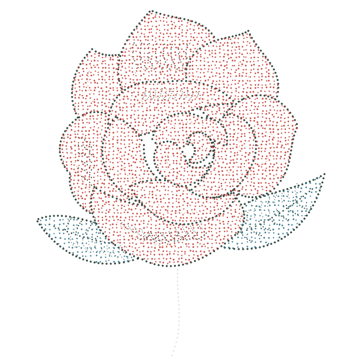

GRATEFUL DEAD · 1965—1995
Thirty years
of live
Dead.
Explore recordings, song frequency, band members, and eras.
Explore the archive ↘
Opening the archive…
Recording metadata, imported tracklists, and cited history. Dates can include studio or uncertain material; partial tapes and missing titles can omit songs. How to read this archive ↗
01 / RECORDINGS
Explore the archive
THE PERFORMANCE TIMELINE
Recording timeline
Slide month by month across year boundaries.
Choose a song or band member to filter the timeline.
Point to a bar or focus it for counts. Select a year to filter the dates below.
Select a year to zoom into individual show dates across 12 months. Slide the window across years, then select a show bar for its tracklist, personnel context, ratings and recordings. Choose Year for the overview; Shift-select years there to make a range. Arrow keys move between bars; Enter selects. Song counts describe imported recordings.
ON RECORD
Album chronology
Release years; original LP track sequences. Open a tracklist to explore songs across the live years.
MATCHING RECORDINGS
Dates in this selection
| DATE | VENUE / LOCATION | EVIDENCE | RECORDING RATING | Open |
|---|
02 / SONGS
Song frequency
Most observed in this selection
03 / HISTORY
Band history
Band members
Membership and recurring guest windows, not confirmation of attendance at every show. Select people to filter.
Historical events
04 / DATA COVERAGE
Archive coverage
Coverage reflects imported recording metadata. Uncertain matches are excluded from song counts; partial tapes and missing titles can omit songs.
Read the sources & methodology ↗ Download the coverage report